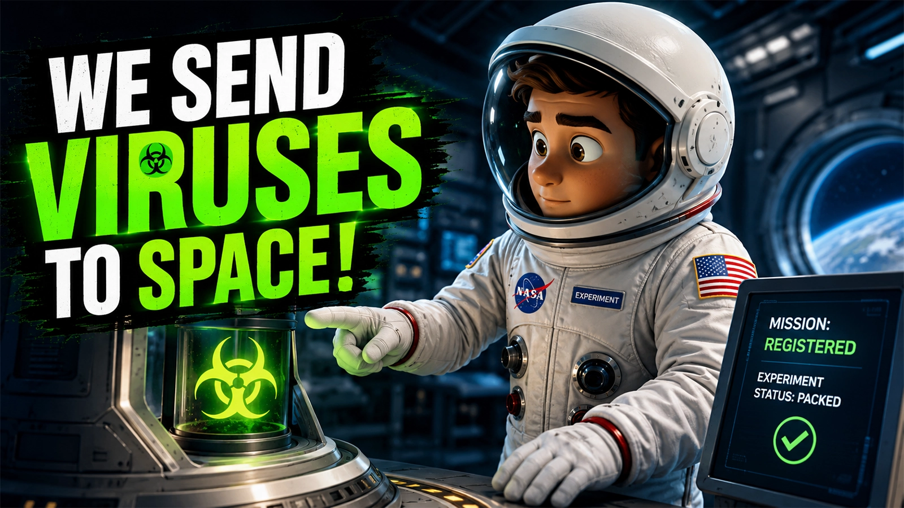

Professional Science Explainer Video Editing for Educational Content
Turn complex scientific concepts into engaging, easy-to-understand videos with professional editing, motion graphics, infographics, and visual storytelling that keeps your audience learning from start to finish.

Professional Science Explainer Video Editing Makes Complex Ideas Easy to Understand
Science content should educate without overwhelming viewers. Professional editing combines clear visuals, animations, and storytelling to make even the most complex topics engaging.
Simplify Complex Concepts
Transform difficult scientific ideas into clear, easy-to-follow visual explanations.
Animated Infographics
Explain data using engaging charts, diagrams, icons, and animated graphics.
Scientific Visuals
Use animations, molecules, DNA, medical graphics, and illustrations to support learning.
Better Learning Experience
Keep viewers engaged with smooth pacing, visual storytelling, and professional editing.
Science Videos That Educate and Inspire
Explore a selection of science explainer videos showcasing engaging storytelling, motion graphics, scientific animations, and educational editing.

What Happens When Viruses Go to Space?
Cinematic storytelling with space animations, motion graphics and educational visuals.
Can Your Phone Tell Twins Apart?
Technology Illustrations, animated diagrams and engaging educational storytelling.
Electrosensitivity: Real Condition or 21st-Century Myth?
Clean motion graphics, data visualization and engaging educational animations.
My Science Explainer Video Editing Process From Research to Engaging Videos
Every science explainer follows a structured workflow that transforms complex topics into visually engaging and easy-to-understand videos.
Understand the Topic
Review the script, references, and learning objectives to identify the best way to present complex information.
Create Visual Storytelling
Combine stock footage, scientific illustrations, diagrams, and animations to support the narration.
Animate & Explain
Add motion graphics, labels, infographics, and transitions that make scientific concepts easier to understand.
Polish & Deliver
Final color correction, sound design, quality control, and export in high resolution for YouTube.
Everything You Need for a Professional Science Explainer
Every project is carefully crafted to simplify complex topics, improve viewer engagement, and deliver a polished educational experience.
Trusted to Turn Complex Topics into Engaging Videos
Every project focuses on clear communication, engaging visuals, and a professional viewing experience.
10+
Science Videos Edited
100%
Educational Storytelling Focus
High
Audience Engagement
Top Rated
Upwork Freelancer
Frequently Asked Questions
Answers to common questions from educators, science communicators, and YouTube creators.
Yes. Whether your content is about medicine, biology, astronomy, AI, physics, or technology, I can edit it into an engaging and easy-to-follow video.
Absolutely. I use Adobe After Effects to create clean motion graphics, animated diagrams, infographics, and visual callouts that support your explanation.
No. If needed, I can source royalty-free assets, illustrations, and icons, and combine them with custom motion graphics to create a professional educational video.
I deliver YouTube-ready videos in Full HD or 4K, optimized for quality and fast publishing.
Ready to Turn Complex Science Into Engaging Explainer Videos?
Whether you're creating educational YouTube videos, medical explainers, technology content, or scientific documentaries, I can help transform your ideas into engaging visuals that educate and retain viewers.
Start Your Project